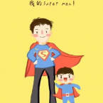

THỜ ĐẠI SIÊU ANH HÙNG
Ngày 21 tháng 5 năm 2014. Hôm nay là thứ bảy, mọi người đều được nghỉ nhưng Hải vẫn đi làm, anh là nhân viên của tòa soạn Tân Văn Minh - một tòa soạn mới thành lập không lâu nằm ở ngoại thành thủ đô Hà Nội. Ngồi đánh máy đến 12 giờ trưa, Hải đeo cái ba lô nặng trịch như ba lô của đám học sinh tiểu học ngày nay, ngồi lên yên con xe wave đã cũ nhưng được lau rửa rất kĩ của mình. Hôm nay Hải sẽ không về căn phòng trọ chật hẹp trong cái ngõ nhỏ mà anh đi về phía Tây - nơi anh muốn thu thập tin tức về những bức xúc trong người dân về việc thu hồi đất của chính quyền địa phương. Công việc rất suôn sẻ, những bài viết của anh được ghi nhận khách quan, chính quyền cấp trên cũng đã vào cuộc và xử lý những người có sai phạm. Cả nước được biết đến vụ việc đó, vụ việc mà nhân dân giành được công lý, những tấm hình chụp nụ cười của những chiến sĩ cảnh sát cơ động và người dân của Hải trở nên nổi tiếng. Hải vui sướng về thành quả của mình cũng như ý nghĩa của công việc. Ngày mai Hải có thể tự thưởng cho mình một ngày nghỉ bên bạn bè.
Vài ngày sau đó, Hải nhận được một số tin nhắn đe dọa sẽ chặn đường và hành hung anh như thường lệ. Bọn đe dọa có đầy đủ thông tin cá nhân của Hải nhưng anh không sợ, anh đã quen rồi. Hải có một cô bạn gái tên là Lê Lan, Lan là sinh viên trường Đại học Khoa học xã hội và Nhân văn, thời gian rảnh cô vẫn đi làm thêm ở quán cafe cạnh trường. Tối nay Lan xin nghỉ làm, ngồi đối diện với Hải tại ban công một quán cafe với phong cách cổ, Lan nói:
- Hải à, em nghĩ anh không nên tiếp tục viết bài về những vụ đó nữa, em lo cho anh về những tin nhắn đó. Anh có thể chuyển sang viết về những người nổi tiếng hay cướp giật giết người vẫn rất nhiều người đọc mà.
- Anh là nhà báo và công việc của anh là đem sự thật đến với người dân chứ không phải một gã hàng ngày lăm lăm cóp nhặt những thông tin vô bổ, đôi khi không có thật với những tiêu đề giật tít quá mức chỉ để có nhiều lượt đọc.
- Cuối con đường chưa chắc là ánh sáng đâu, anh phải biết điều đó là nguy hiểm.

Đưa Lan về nhà rồi phóng xe về, Hải ngẫm lại những lời Lan nói, Hải thấy mình giống như 1 nhà khoa học thám hiểm một cái hang, càng đi sâu nó càng tối. Hải không biết liệu cái hang đó có đường ra hay không nhưng anh vẫn sẽ đi vào bởi đó là lý tưởng của anh, một lý tưởng mập mờ - một ánh sáng le lói. Đang trong dòng suy nghĩ, Hải bị một đám con đồ chặn xe, chúng chùm đầu và lôi Hải vào bên trong một con hẻm. Cầm đầu bọn chúng là một tên cao to vạm vỡ, chỉ với vài đòn "đánh yêu" tên săm trổ đã khiến Hải cảm thấy kiệt sức và không thể giãy giụa thêm. Đến lúc đó hắn mới nói:
- Mày là con giời hay sao mà theo đuổi vụ này? Đây là lần đầu tiên tao chỉ cảnh báo, còn nếu mày không biết dừng lại thì mày sẽ không phải cầm bút trong nửa đời còn lại nữa đâu. Nhớ tên tao, giang hồ gọi tao là Lý (dog).
Đám côn đồ lên xe phóng đi rất nhanh. Hải sau đó cũng lên xe trở về nhà. Hải không sợ, chưa bao giờ sợ, hành động của mấy tên côn đồ chỉ làm Hải càng mong muốn có thể hoàn thành công việc của mình. Bọn giang hồ giỏi đấm đá tay chân chưa bao giờ hành động thấu đáo cả, chúng lấy hết tài liệu có giá trị của anh, xóa dữ liệu trên máy tính anh nhưng chưa bao giờ xóa được trí nhớ vốn đã rất tuyệt với của anh. Anh mở cái máy tính xách tay, đánh những dòng chữ đầu tiên viết về những dấu hiệu sai phạm cực kỳ nghiêm trọng của những người điều hành tập đoàn Canoshin - một tập đoàn đóng tàu rất lớn của nhà nước.
Bài báo củ
Bài báo của anh được đăng tải trên mạng, được đăng lên trang nhất của tờ báo, được mọi người đón nhận. Bí mật đáng sợ của một tập đoàn kinh tế lớn được phanh phui giải thích cho những thua lỗ của tập đoàn này trong thời gian qua. Bài báo viết về những hành vi tham nhũng quá lớn gây thiệt hại lên tới hơn 2% GDP của cả nước. Công an vào cuộc, điều tra ngọn ngành sự việc. Hải làm việc rất thành thật với cơ quan công an, anh khai đầy đủ, rõ ràng tất cả những việc mình đã làm để có được những thông tin đó. Hải đồng ý làm nhân chứng để chứng minh vụ án.
Với tư cách là nhân chứng đặc biệt, Hải được bảo vệ rất kĩ bởi cơ quan công an, vì vậy mặc dù vẫn nhận được những tin nhắn đe dọa Hải vẫn không hề lo sợ. Tuy nhiên vài ngày sau, Hải nhận được lời nhắn từ số điện thoại của Lan: "2h chiều nay tại sau núi của khu du lịch sinh thái Hoàng Nam mày sẽ đến một mình hoặc bạn gái mày sẽ chết một mình" sau đó là giọng Lan thều thào yếu ớt: "anh ơi, cứu em hu hu". Hải trợn mắt hốt hoảng chạy ra khỏi giường, mặc vội quần áo phóng xe ngay đến vùng ngoại ô thành phố, nơi khu du lịch Hoàng Nam tọa lạc gần một đỉnh núi lớn, tương truyền ngọn núi cổ này có những truyền thuyết rất đáng sợ. Nhưng truyền thuyết là truyện chỉ kể cho trẻ con nghe mà thôi, Hải đến sau núi, nơi Lan đã bị trói, bị bịt mồm, bị đánh và ... còn bị sao nữa thì có chúa mới biết. Hải quát to.
Nguyễn Cao Bách